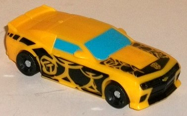
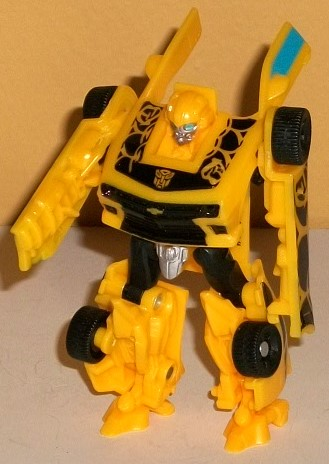
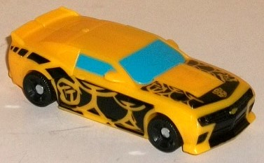
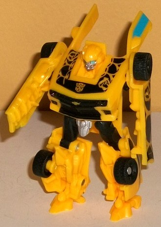
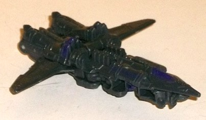
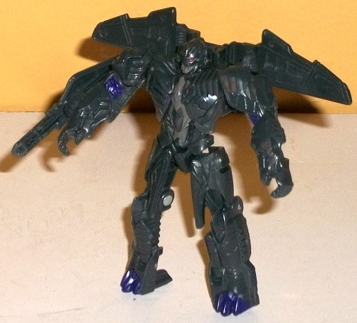

 
Allegiance : Autobot
Size : Legion
Difficulty of Transformation : Very Easy
Color Scheme : Orangish "cheesy" yellow, black, and some silver, metallic bronze, and light blue
Individual Rating : 8.2
 Bumblebee
& Megatron (Legion 2-pack; The Last Knight) [Toys "R" Us Exclusive]
Bumblebee
& Megatron (Legion 2-pack; The Last Knight) [Toys "R" Us Exclusive]
Set Price
: ~$12 (U.S.)
Overall Rating
: 8.2
(NOTE: Because this set is composed of repaints,
this is not a full-blown review. This mainly covers any changes made to
the set and the color scheme, and merely compares it to the original versions
of these molds. For a review on the original DotM Legion Bumblebee, go
here
.
For a review on the original TLK legion Megatron toy, go
here
.)
 Bumblebee
Bumblebee


Allegiance
: Autobot
Size
: Legion
Difficulty of Transformation
: Very
Easy
Color Scheme
: Orangish "cheesy"
yellow, black, and some silver, metallic bronze, and light blue
Individual Rating
: 8.2
The base colors of the
plastics for this "Cyberglyph" redeco of Bumblebee are the same as the
mass-release
,
as are the actual shades of paint-- the Chevrolet symbol on the front is
the same metallic bronze as on the mass-release, for example. The face
is also painted the same. Where this toy really looks different is in vehicle
mode-- most obviously the broken-up stripes on the front hood and on the
sides. Both sides have "Bee" in Cyberglyphics carved out in yellow amongst
those said black stripes. Additionally, there's also some yellow slashes
through the black stripes near the back end above the rear tires, and a
yellow Autobot symbol etched into black on the front hood. These honestly
are pretty cool-looking-- almost like Bumblebee got tagged by some alien
graffiti artist when he was asleep or something. The other changes are
mostly minimal. The front and side windows are now the same light blue
as his optics, which is also an upgrade to me, bringing some more color
to the alt mode. The black on the grill is more extensive, and there's
now silver on the robot crotch (yay!).
No mold changes have
been made to this version of Bumblebee.
Megatron


Allegiance
: Decepticon
Size
: Legion
Difficulty of Transformation
: Easy
Color Scheme
: Dark gray and some
deep purple, dark brownish gray, and dark red
Individual Rating
: 8.1
This "redeco" of Megatron
isn't very different from the original. The base color plastic is the same,
as are the dark brownish gray and red paint apps. The only real things
that are different are that A. the gold-yellow on the mass release has
been replaced with a deep, dark purple paint, and B. as befits the "Cyberglyph"
gimmick, he has his name in Cyberglyphs on the right side of his nosecone.
The deep purple paint is quite a nice shade-- very Decepticon-y, and it
at least gives color to the toy. That said, it's a bit TOO dark, to the
point where it doesn't contrast enough against the dark gray plastic. This
is especially apparent for the Cyberglyph paint apps, as they're REALLY
hard to make out. Still, if you don't like the Cyberglyph gimmick and prefer
to ignore those paint apps, well, it's pretty easy here!
No mold changes have
been made to this version of Megatron.
Whether or not I'd recommend
this Legion 2-pack depends on whether or not you have these molds already--
especially Megatron. If you already have Legion TLK Megatron, this version
is so similar there's no reason to essentially waste half the price of
this 2-pack on a toy you already have. However, if you don't have Megatron--
or if you only have 'Bee-- I'd get this 2-pack if you like Legion class
toys, as both are solid molds for the size and Bumblebee's "graffiti" paint
job is different enough to really make him pop even if you already have
another version of the mold.
Review by Beastbot